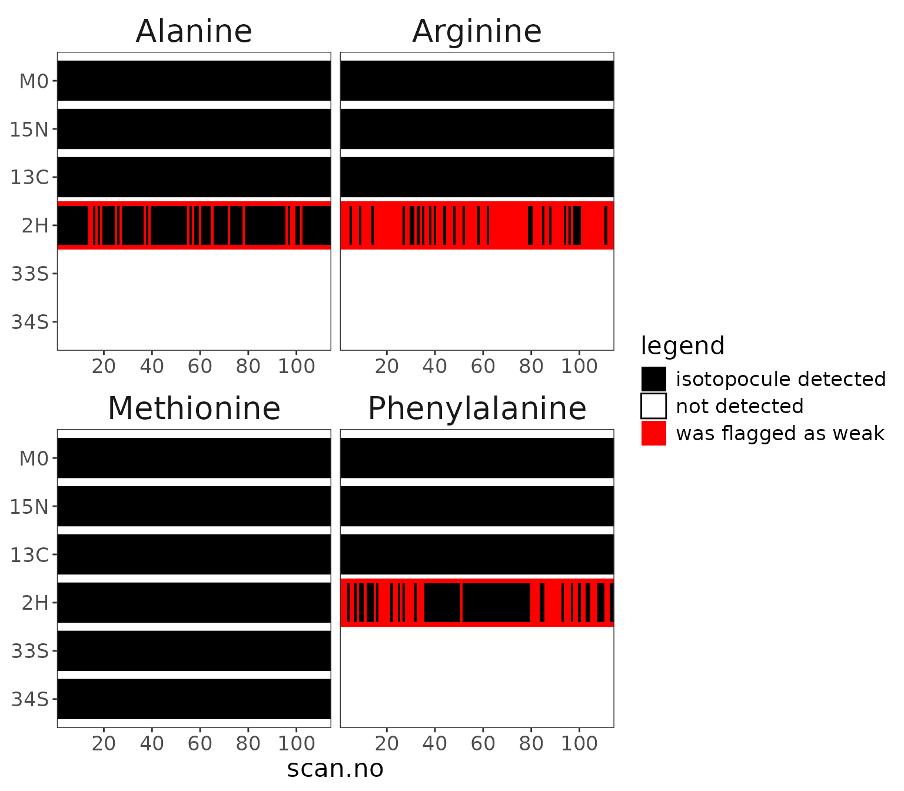

Model Peptide (MRFA)
This is an example for shot-noise analysis from Kantnerová et al. (2024).
Data
Load data
# load and process data
data <-
# load file included in isoorbi package
system.file(package = "isoorbi", "extdata", "testfile_shotnoise.isox") |>
orbi_read_isox() |>
# check data for satellite peaks
orbi_flag_satellite_peaks() |>
# make sure isotopocules are present in (almost) all scans, otherwise
# shot noise analyses can be inaccurate
orbi_flag_weak_isotopocules(min_percent = 90) |>
# see if there are any AGC outliers
orbi_flag_outliers(agc_fold_cutoff = 2)This indicates that there were a few satellite peaks and weak isotopocules but no outliers.
Visualize isotopocule coverage
Show the isotopocule coverage for the different amino acids, thus
highlighting which isotopocules were detected in which scans. Note that
2H was highlighted as weak for Alanine, Arginine, and Phenylalanine.
This is because of the high cutoff (90%) in
orbi_flag_weak_isotopocules() which is appropriate for
shot-noise analyses but simply for inspecting ratios it would be
reasonable to examine the 2H signal at least for Alanine.
data |> orbi_plot_isotopocule_coverage()

Isotopocule coverage
Visualize satellite peaks
Show peaks that were flagged as satellite peaks.
data |> orbi_plot_satellite_peaks()
Satellite peaks
Visualize intensity vs time
data |> orbi_plot_raw_data(
isotopocules = "M0",
y = intensity,
y_scale = "log"
)
Isotopocule intensity for M0 ion
Shot noise
Calculations
# calculate ratios vs basepeak
data_w_bp <-
data |>
orbi_define_basepeak("M0")
# calculate shot noise
shot_noise <-
data_w_bp |>
orbi_analyze_shot_noise()
# export shot noise to an Excel file
shot_noise |>
orbi_export_data_to_excel("shot_noise.xlsx") Table
# example of the first few rows of the shot-noise calculations
shot_noise |>
arrange(compound, isotopocule, scan.no) |>
select(compound, scan.no, time.min, isotopocule,
ratio, ratio_rel_se.permil, shot_noise.permil) |>
head(10) |>
knitr::kable()| compound | scan.no | time.min | isotopocule | ratio | ratio_rel_se.permil | shot_noise.permil |
|---|---|---|---|---|---|---|
| Alanine | 1 | 0.059 | 15N | 0.0062453 | NaN | 73.71127 |
| Alanine | 2 | 0.102 | 15N | 0.0060919 | 12.43207 | 52.42764 |
| Alanine | 3 | 0.146 | 15N | 0.0068807 | 37.74616 | 42.08467 |
| Alanine | 4 | 0.189 | 15N | 0.0059526 | 32.61878 | 36.78579 |
| Alanine | 5 | 0.233 | 15N | 0.0060549 | 26.57095 | 32.90351 |
| Alanine | 6 | 0.277 | 15N | 0.0055040 | 29.99353 | 30.32862 |
| Alanine | 7 | 0.320 | 15N | 0.0060244 | 25.50106 | 28.18264 |
| Alanine | 8 | 0.364 | 15N | 0.0065182 | 23.43771 | 26.31067 |
| Alanine | 9 | 0.408 | 15N | 0.0064846 | 21.36449 | 24.76418 |
| Alanine | 10 | 0.451 | 15N | 0.0061980 | 19.10467 | 23.50447 |